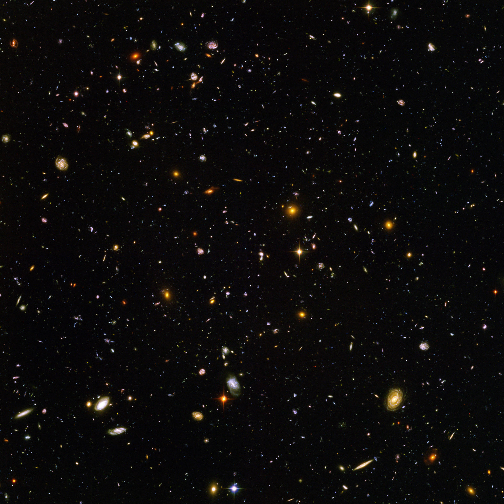

No save file selected.
Use in-game flag colors instead of in-game map colors
Draw country names on map
Draw info in the center of the map
Name your galaxy:
Warning: The maps generated do not include include the fog of war.
On Windows, use Firefox for better map name rendering.
Some fonts may not load the first time you generate a map.
Generate Map
